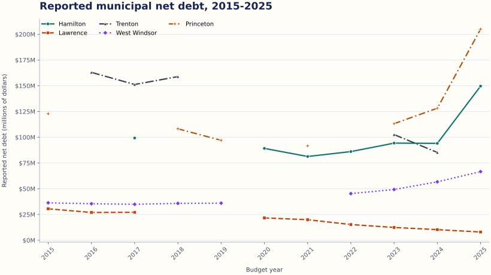

It can show
What the state workbook reports for these five municipality codes, how reported values move over time, and where the source is missing, flagged, or internally inconsistent.
Mercer County · 2015-2025 · Private release candidate
A reproducible view of selected Mercer County municipal debt and tax indicators using New Jersey's public budget records.
Research question How have reported municipal net debt and tax-collection indicators changed across five Mercer County municipalities from 2015-2025, and where does the public record contain gaps or inconsistencies?
Read this first
What the state workbook reports for these five municipality codes, how reported values move over time, and where the source is missing, flagged, or internally inconsistent.
Financial health, management quality, causation, creditworthiness, or what policy a community should adopt. The records are self-reported and are not independently verified here.
Principal observation
Current dollars, not adjusted for inflation
Swipe the chart sideways to view all years

Supporting table
| Municipality | Reported net debt | Taxes collected | Source cells |
|---|---|---|---|
| Hamilton Code 1103 | $149.6M | 99.99% | 2025 Summary LT291 2025 Summary P291 |
| Lawrence Code 1107 | $8.0M | 99.49% | 2025 Summary LT295 2025 Summary P295 |
| Trenton Code 1111 | $85.3M | 98.28% | 2024 Summary LU297 2024 Summary P297 |
| West Windsor Code 1113 | $66.6M | 99.49% | 2025 Summary LT299 2025 Summary P299 |
| Princeton Code 1114 | $205.0M | 99.13% | 2025 Summary LT300 2025 Summary P300 |
“Latest valid” is field-specific. It does not certify the value as independently audited; it means the source value is numeric, the row does not carry either source missing-data flag, and the observation is not excluded by a documented v0.1 rule.
Uncertainty is part of the record
The processed panel preserves all 55 municipality-year rows. Textual “No data” becomes null, never zero. The anomaly ledger currently contains 72 documented field-level entries.
Download anomaly ledgerHamilton: 2015, 2016, 2018, 2019; Lawrence: 2018, 2019; Trenton: 2015, 2019, 2020, 2021, 2022, 2025; West Windsor: 2020, 2021; Princeton: 2016, 2017, 2020, 2022.
All five 2024 property-valuation values are sharply below both adjacent years. A formula-mode test verifies that the source cells use cached external-workbook lookups. The values remain in the audit download, but valuation-derived debt ratios are excluded from charts, summary tables, and interpretive claims.
Several reported per-capita debt values differ materially from reported debt divided by the population in the same row. Both reported and calculated comparison fields remain in the audit download; per-capita debt is excluded from v0.1 charts, summary tables, and interpretive claims.
15 rows carry “No UFB Available” or “Significant Data Missing.” 6 rows report no numeric net debt. Flagged rows stay in the panel but cannot supply chart or latest-valid values.
Trace the work
Every row carries the workbook, annual sheet, source row, metric cell, original source representation, unit, and documented transformation. The pinned workbook was retrieved 2026-07-27 and verified with SHA-256 79a59be4c4ab2669….
Total structural imbalances passed a definition and basic coverage review (50 of 55 rows numeric), so the field is included for audit. It is not interpreted or displayed as an outcome in v0.1.
See extraction rules, validation gates, and field locationsInspect or reproduce
The audit panel intentionally preserves fields and observations that are excluded from the chart or latest-valid table. Publication-status language describes display and interpretation eligibility, not whether evidence is retained in the downloadable CSV.
Who this is for
Residents checking a figure before a public meeting.
Journalists and civic groups locating a source cell or gap quickly.
Students learning how public records become a reproducible dataset.
Public officials spotting a record that may need correction or context.
Why this is a passion project
The difficult workbook becomes a rebuildable public resource whose values can be traced and challenged.
Communities are not ranked. Missing records are described as uncertainty in the source, not failure by a town.
Five codes, two indicators, one chart, and one table create something dependable before expanding scope.
Corrections and feedback
Use the structured form to identify the municipality code, budget year, field, source sheet and cell, current record, proposed correction, and supporting public evidence. GitHub issues and attachments are public, so do not include confidential or personally identifying information.
Open the data-correction form Read the correction protocolThese figures come from self-reported public budget records and have not been independently audited. This project is not a credit rating, investment analysis, or policy recommendation.
AI assisted with code drafting, test coverage, documentation, and page structure. A human remains responsible for checking source definitions, anomalies, code behavior, and every published claim. Read the full disclosure.